Igor is an all terrain vehicle that can seat two people. It's equipped with caterpillar tracks driven by two 125cc engines, making it perfect for off-road exploration. It uses a Raspberry Pi and a slew of high torque servos in order to allow for remote operation via a 2.5 GHz remote controller making it an ideal choice for being deployed in hostile regions.
The caterpillar's tracks are made with off-the-shelf motorcycle chains linked together with rubber connections. To keep the tracks straight, sprockets are used to rotate the drive train and suspension. The engines on either side alter their throttle based on input from the driver to turn. This system allows you to change direction of Igor while standing still, giving it an unrivalled turning radius.
The suspension of Igor allows the track to change shape in accordance with the terrain. The suspension arms resemble "dog legs" and include shock absorbers to soften the ride while keeping the track slack free.
Igor was built over the course of 9 months and uses aluminium and stainless steel for light and rugged construction. The onboard driver or the remote controller sends signals to the Raspberry Pi, which translates them into throttle and brake response for the engines and brakes.
 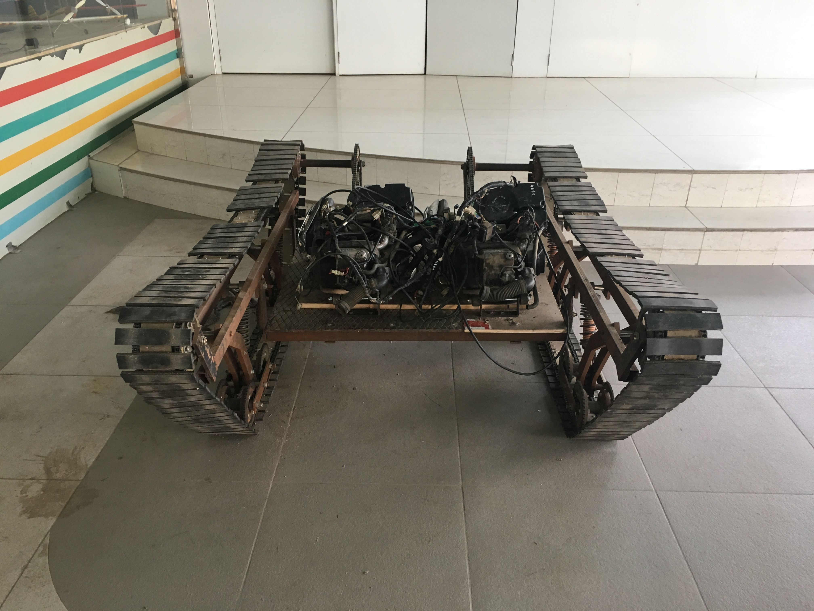
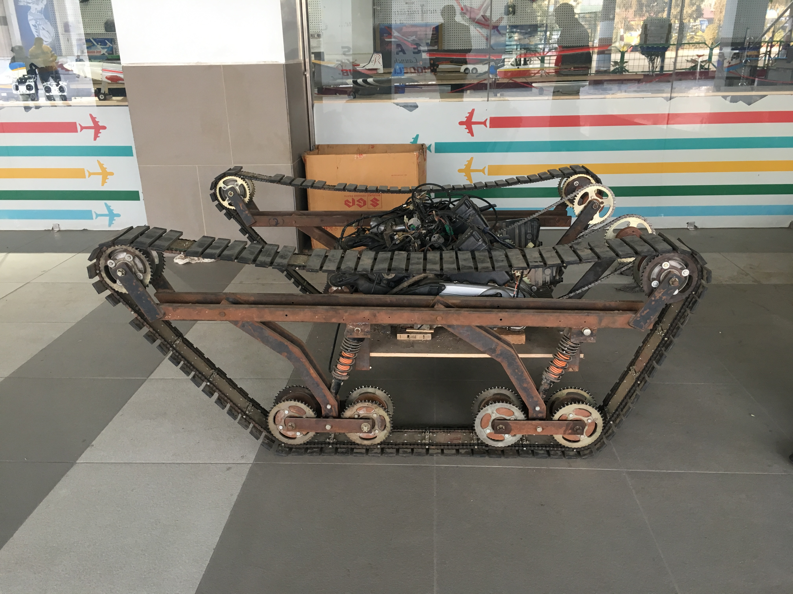
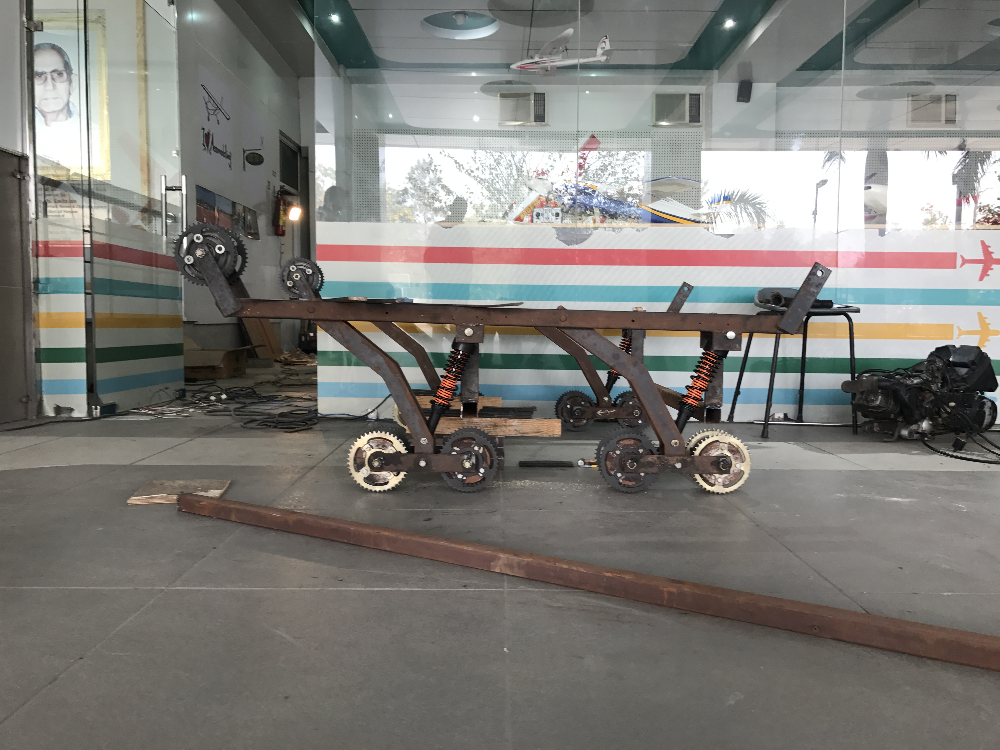
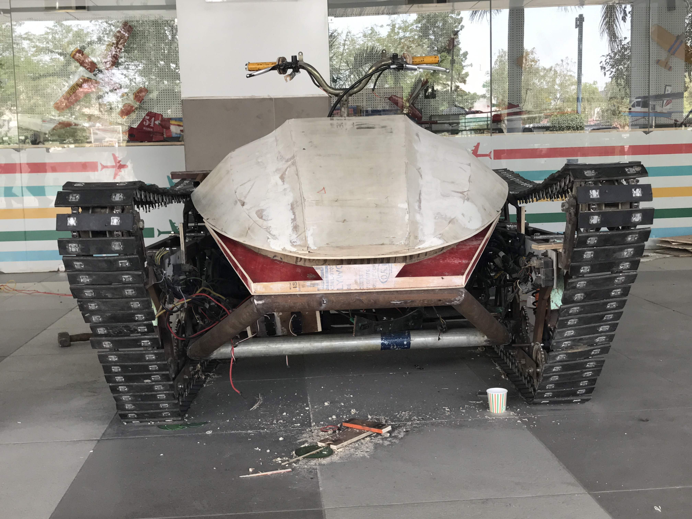
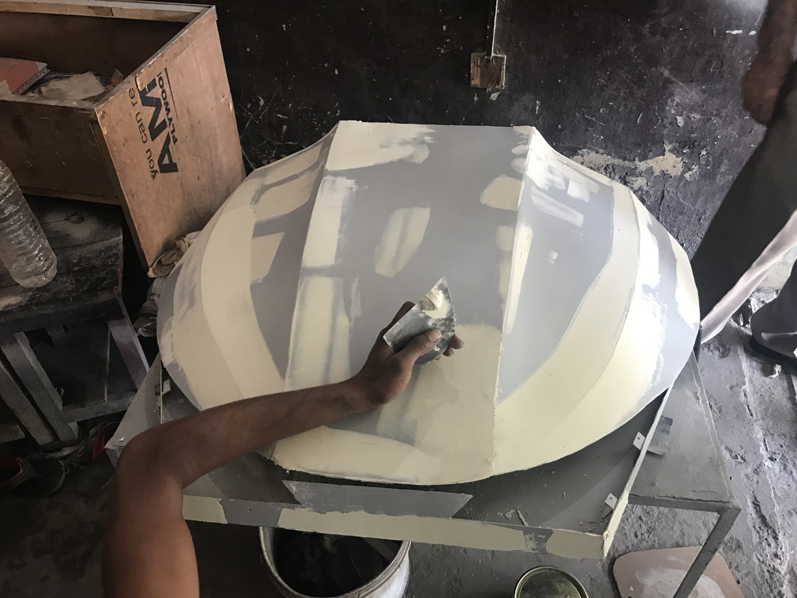
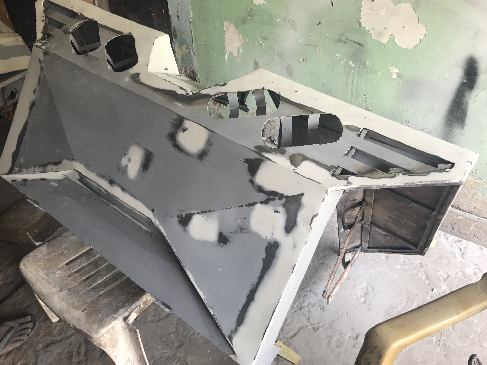
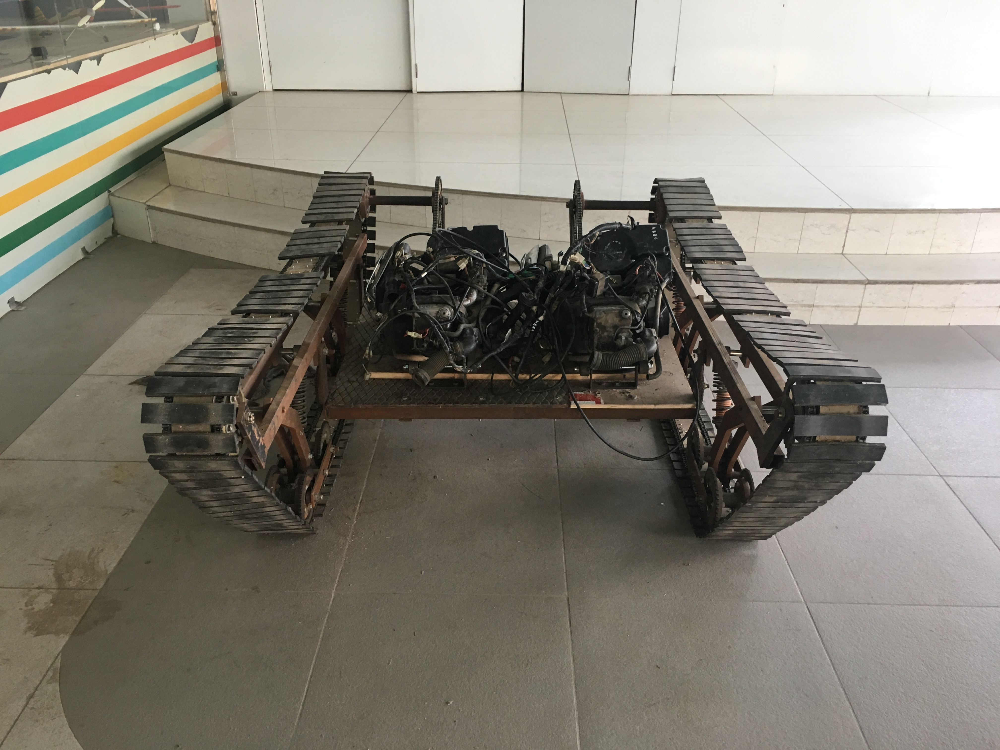
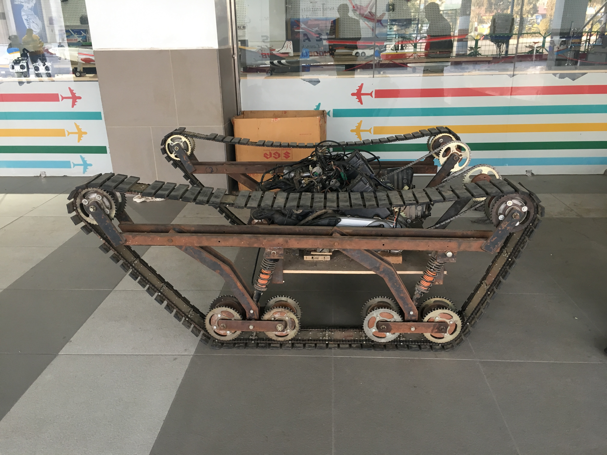
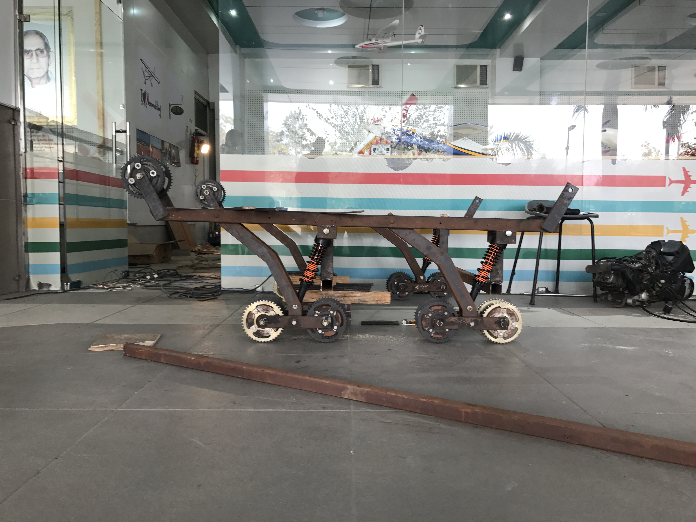
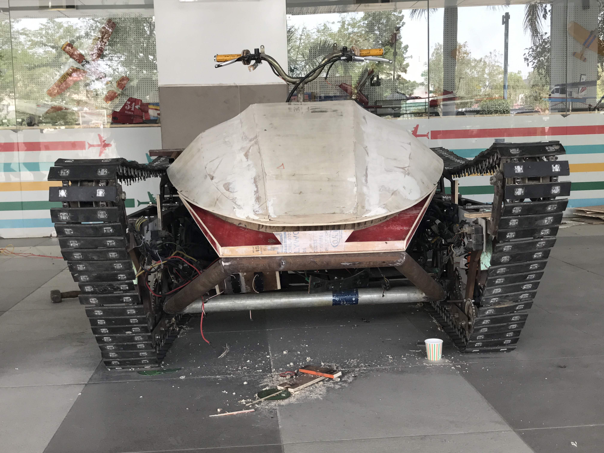
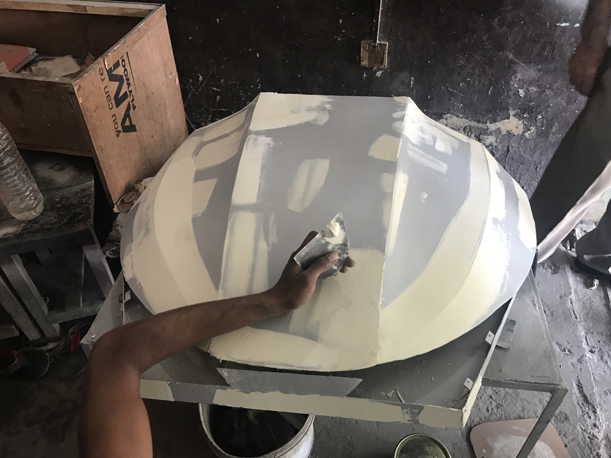
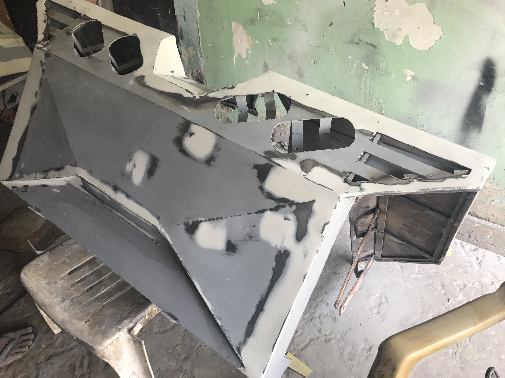